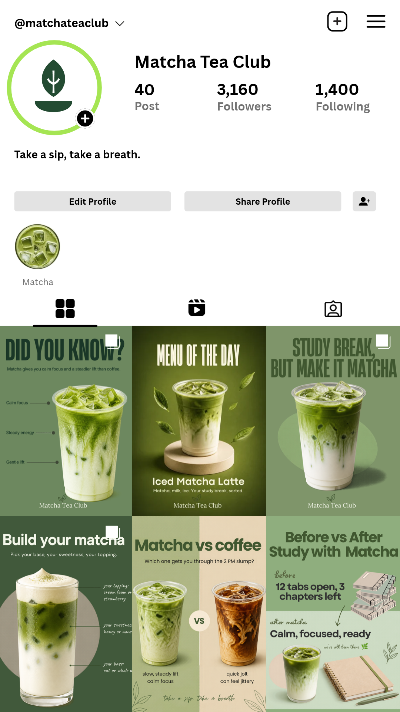

Meet the brand
A new visitor sees what’s on offer, learns one simple fact, and answers a light mood question. Nothing is pushy, so the brand feels calm from the first scroll.
I plan, design, and organize social media content so a brand shows up consistently. This page walks through one practice project from start to finish, plus two shorter samples that show how I adapt the same process to different businesses.
Three mock brands, built to show how I adapt one process to different businesses. No real clients and no metrics.
01 / Matcha Tea Club
02 / Content design

A new visitor sees what’s on offer, learns one simple fact, and answers a light mood question. Nothing is pushy, so the brand feels calm from the first scroll.
These posts speak to real student moments and give people an easy way to reply, tag a friend, and imagine visiting.
Build familiarity and encourage interaction by introducing the brand naturally, connecting with student experiences, and giving the audience simple reasons to engage.